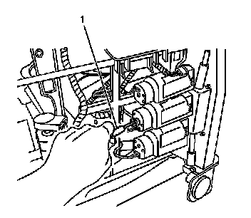

Seat Horizontal Adjuster Position Sensor Replacement
Seat Horizontal Adjuster Position Sensor Replacement
Removal Procedure
Caution: Refer to SIR Caution (SIR Caution) .
1. Disable the SIR system. Refer to SIR Disabling and Enabling (Service and Repair) .
2. Remove the seat cushion to gain access to the horizontal seat adjuster motor. Refer to Front Seat Cushion Replacement (Front Seat Cushion Replacement) .
3. Disconnect the electrical connectors from the motor.

4. Remove the seat adjuster drive cable (1) by pulling the cable out of the motor.
5. Remove the sensor from the motor.
Installation Procedure
1. Install the sensor to the motor.
2. Line up the square end of the cable with the motor.
3. Install the long drive cable (1) into the motor.
4. Install the long cable into the seat adjuster.
5. Ensure that the cable is fully seated.
6. Connect the electrical connectors.
7. Install the seat cushion. Refer to Front Seat Cushion Replacement (Front Seat Cushion Replacement) .
8. Enable the SIR system. Refer to SIR Disabling and Enabling (Service and Repair) .
9. Calibrate the seat. Refer to Memory Seat Calibration (Programming and Relearning) .